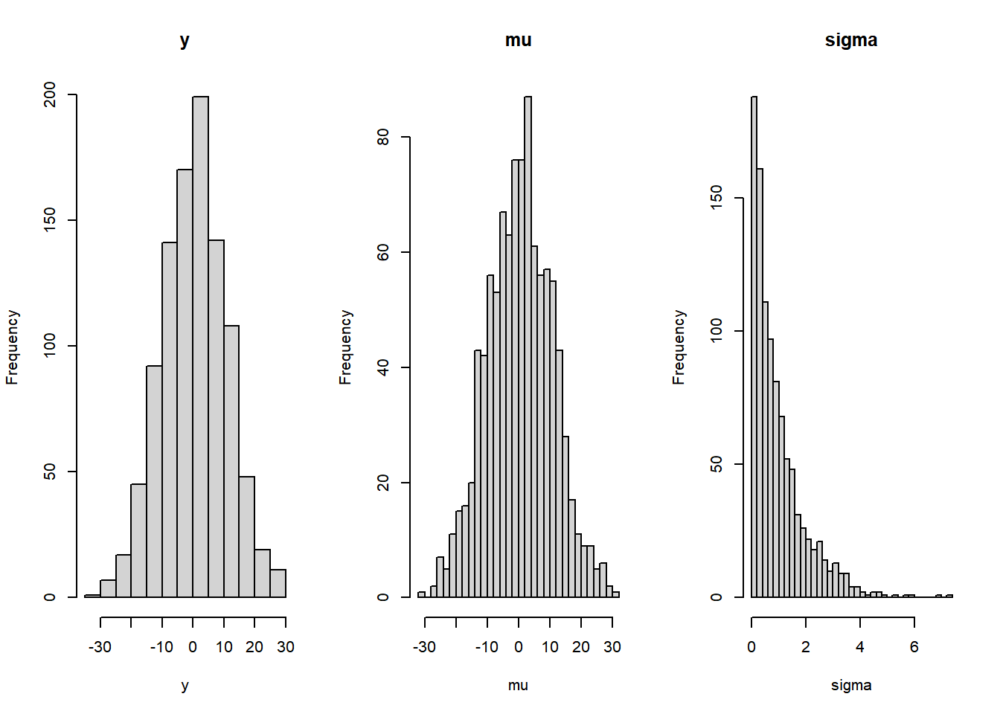

This chapter discusses basic Bayesian model fitting with grid and quadratic approximations. The title, “geocentric models,” refers to models that make good predictions, but do not provide causal information about a question. One of these examples is linear regression. This chapter gives examples of basic bayesian linear regression and includes details such as prior predictive checks and how to fit curves with polynomials and b-splines.
4.1 Chapter notes
Normal distributions arise from sums of random fluctuations. Lognormal distributions arise from products of random fluctuations. This property explains why normal distributions are so good at modeling real world data (ontological justification).
Normal distributions can also be justified by the principle of maximum entropy – if all we are willing to specify about a distribution is its mean and variance, then the normal distribution contains the least amount of information (epistemological justification).
Index coding (as opposed to dummy coding or similar methods) makes specification of priors for categorical variables easier.
The prior predictive simulation, drawing samples from the distribution implied by the priors, is essential for ensuring that our priors are reasonable. Note that we should not compare the prior predictive simulation to the observed data, only to our preexisting knowledge of constraints on the model.
Many models which are written in the “plus epsilon” form (see pg 81) (typical for linear models) can be rewritten in this more general framework, which will be easier for non-Gaussian models.
Quadratic approximation, estimating the peak of the posterior distribution with a multivariate normal distribution, is easier than grid approximation and works well when the posterior is approximately Gaussian (many simple examples are). The peak of the quadratic approximate posterior is the maximum a posteriori estimate.
Recall that even though grid and quadratic approximate posteriors provide an actual estimate of the posterior distribution, we can (and should) still sample from the posterior. This mimics the process for inference on more complicated models that must be fit with MCMC algorithms.
A linear model fits the mean, \(\mu\), of an outcome as a linear function of the predictor variable(s) and some parameters. These models are often geocentric – they provide good answers, but often say nothing about causality.
Plotting simulations of the posterior distribution can provide a lot of information about the posterior (see pg 99), often much more than tables of calculations alone.
These types of Bayesian models incorporate two different types of uncertainty – uncertainty in parameter values, which is based on the plausibility of parameter values after seeing the data, and uncertainty from sampling processes.
We can extend linear models to fit curved patterns in datas in several ways, but two of the easiest are polynomials and b-splines. Priors can be difficult to fit to both, as these models are also geocentric. They can accurately fit curves, but do not describe the mechanism or process that generates curved data in the first place. See pg. 119 for an example of fitting a b-spline model using rethinking. One further extension is the generalized additive model (GAM) which incorporates smoothing over continuous predictor variables.
4.2 Exercises
The first few questions are about the following model. \[\begin{align*}
y_i &\sim \mathrm{Normal}(\mu, \sigma) \\
\mu &\sim \mathrm{Normal}(0, 10) \\
\sigma &\sim \mathrm{Exponential}(1)
\end{align*}\]4E1. In the model shown, the line \(y_i \sim \mathrm{Normal}(\mu, \sigma)\) is the likelihood.
4E2. The model contains two parameters (\(\mu\) and \(\sigma\)).
4E3. To use Bayes’ theorem to calculate the posterior, we would write \[
\frac{\prod_{i} \mathrm{Normal}(y_i \mid \mu, \sigma) \times \mathrm{Normal}(\mu \mid 0, 10) \times \mathrm{Exponential}(\sigma \mid 1)}{\int\int \prod_{i} \mathrm{Normal}(y_i \mid \mu, \sigma) \times \mathrm{Normal}(\mu \mid 0, 10) \times \mathrm{Exponential}(\sigma \mid 1) \ \mathrm{d}\mu \ \mathrm{d}\sigma}.
\]
4E4. In the model shown below, the linear model is the line \(\mu_i = \alpha + \beta x_i\). \[\begin{align*}
y_i &\sim \mathrm{Normal}(\mu, \sigma) \\
\mu_i &= \alpha + \beta x_i \\
\alpha &\sim \mathrm{Normal}(0, 10) \\
\beta &\sim \mathrm{Normal}(0, 1) \\
\sigma &\sim \mathrm{Exponential}(2)
\end{align*}\]4E5. There are three parameters in the posterior distribution of the model shown (\(\alpha\), \(\beta\), and \(\sigma\)) – \(\mu\) is no longer a parameter of the model since it is calculated deterministically.
4M1. For the model definition below, simulate observed \(y\) values from the prior. \[\begin{align*}
y_i &\sim \mathrm{Normal}(\mu, \sigma) \\
\mu &\sim \mathrm{Normal}(0, 10) \\
\sigma &\sim \mathrm{Exponential}(1)
\end{align*}\]
# Do the simulationmu <-rnorm(1000, mean =0, sd =10)sigma <-rexp(1000, rate =1)y <-rnorm(1000, mu, sigma)# Plot the resultslayout(matrix(c(1, 2, 3), ncol =3))hist(y, breaks ="FD", main ="y")hist(mu, breaks ="FD", main ="mu")hist(sigma, breaks ="FD", main ="sigma")

4M2. Translate the model into a quap formula.
y ~dnorm(mu, sigma),mu ~dnorm(0, 10),sigma ~dexp(1)
4M3. Translate the quap model formula below into a mathematical model definition.
y ~dnorm(mu, sigma),mu <- a + b * x,a ~dnorm(0, 10),b ~dunif(0, 1),sigma ~dexp(1)
\[\begin{align*}
y_i &\sim \mathrm{Normal}(\mu_i, \sigma) \\
\mu_i &= a + b * x_i \\
a &\sim \mathrm{Normal}(0, 10) \\
b &\sim \mathrm{Uniform}(0, 1) \\
\sigma &\sim \mathrm{Exponential}(1)
\end{align*}\]